TỔ NGỮ VĂN TỔ CHỨC HỘI THI THUYẾT TRÌNH VĂN HỌC NĂM 2013

Lần cập nhật cuối lúc Thứ hai, 04 Tháng 3 2013 08:25 Viết bởi Administrator Thứ hai, 04 Tháng 3 2013 07:44
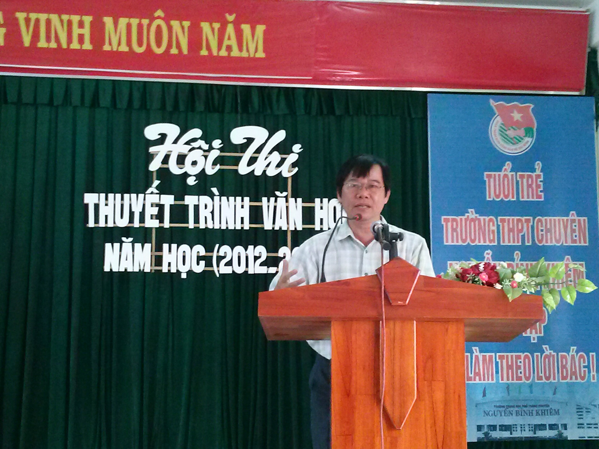 Chiều ngày 20 tháng 02 năm 2013, Tổ Ngữ văn đã tổ chức thành công Hội thi thuyết trình văn học. Đây là một hoạt động thường niên nhằm tăng cường chất lượng dạy và học môn Ngữ văn trong nhà trường; tạo sân chơi hấp dẫn cho những học sinh yêu thích văn học, khơi dậy hứng thú học tập môn Văn. Đồng thời, qua cuộc thi, phát hiện và bồi dưỡng những học sinh có năng khiếu thuyết trình để tham gia Hội thi Thuyết trình văn học cấp tỉnh.
Tham dự hội thi có thầy Hiệu trưởng Nguyễn Đình Tiến, thầy Châu Văn Thọ - Bí thư đoàn trường cùng các thầy cô tổ Ngữ văn, gần 200 học sinh đến từ 3 lớp khối chuyên Văn và một số học sinh các khối lớp khác trong nhà trường.
Thầy Trương Văn Quang khai mạc hội thi.
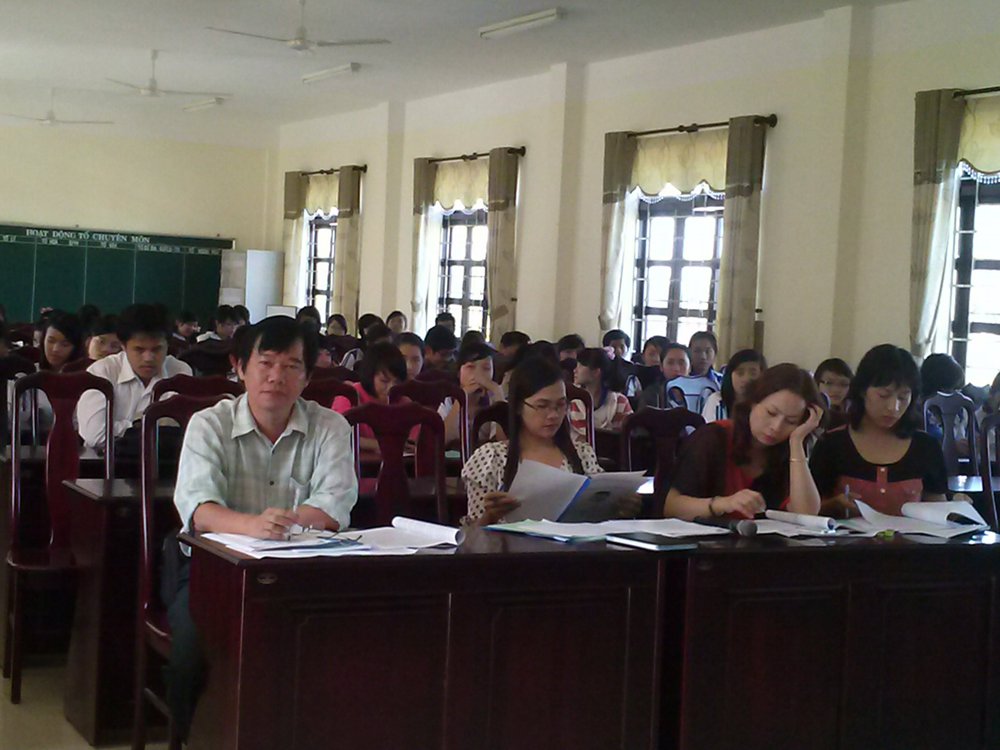
Các thầy cô trong tổ Ngữ văn
Hội thi năm nay có 17 đề tài thuyết trình của học sinh đại diện cho 17/ 23 lớp tham gia dự thi. Các bài viết hầu hết đã được các em học sinh chuẩn bị nghiêm túc, công phu từ hình thức trình bày văn bản đến nội dung thể hiện. Đề tài được học sinh lựa chọn thuyết trình hầu như rải đều trong chương trình Ngữ văn 3 khối lớp: từ văn học trung đại đến văn học hiện đại; từ văn học lãng mạn đến văn học hiện thực, văn học cách mạng; từ thơ đến truyện…rất phong phú, đa dạng nên đã mang lại nhiều hứng thú cho người nghe. Đặc biệt, trong số 17 học sinh dự thi, có 3 bạn nam sinh với những phần trình bày khá đặc sắc, giàu cá tính mang lại cảm nhận thú vị, tạo điểm nhấn cho hội thi. Đó là em Trần Huy Hoàng học sinh lớp 10 chuyên Toán, Lê Trọng Nghĩa lớp 12 chuyên Toán và em Nguyễn Hồng Lĩnh lớp 11 chuyên Tin.
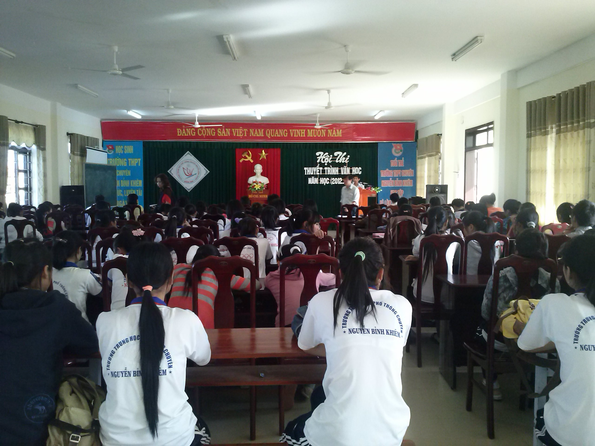
Hội thi thu hút hơn 200 học sinh tham dự, cổ vũ
Kết quả Hội thi: Em Phan Nguyễn Thu Sương, học sinh lớp 12 chuyên Anh đạt giải Nhất - đề tài : “Tiếng hát con tàu – hành trình đi tìm lời giải cho câu hỏi: Nghệ sĩ: Ta là ai?” với phần thuyết trình và trả lời câu hỏi rất tự tin, xuất sắc và đầy ấn tượng.
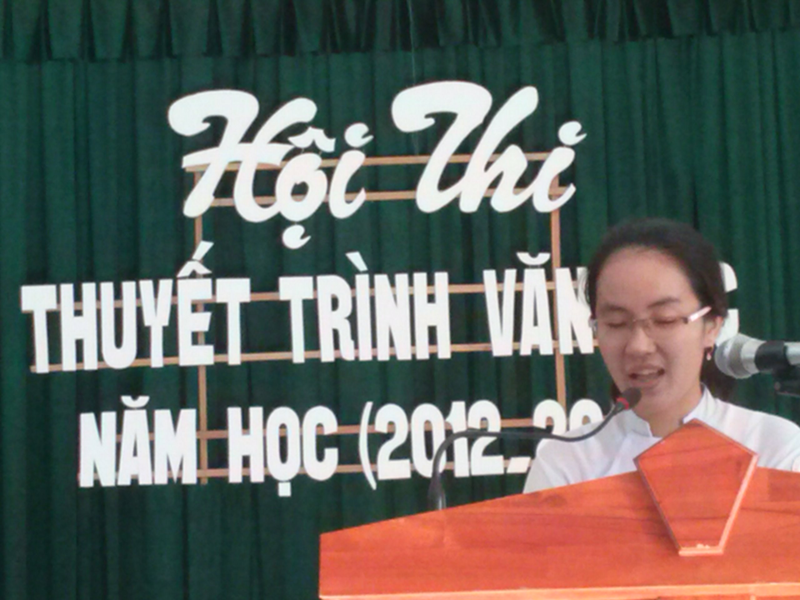
Thí sinh Phan Nguyễn Thu Sương - Lớp 12 chuyên Anh
Giải Nhì thuộc về học sinh Nguyễn Như Thảo lớp 11 chuyên Văn; giải Ba thuộc về học sinh Trần Huy Hoàng 10 chuyên Toán và Nguyễn Lê Ni, 11 chuyên Anh. Có hai giải KK thuộc về học sinh Đỗ Trần Lộc Uyển lớp 12 chuyên Văn và Lê Trọng Nghĩa lớp 12 chuyên Toán.
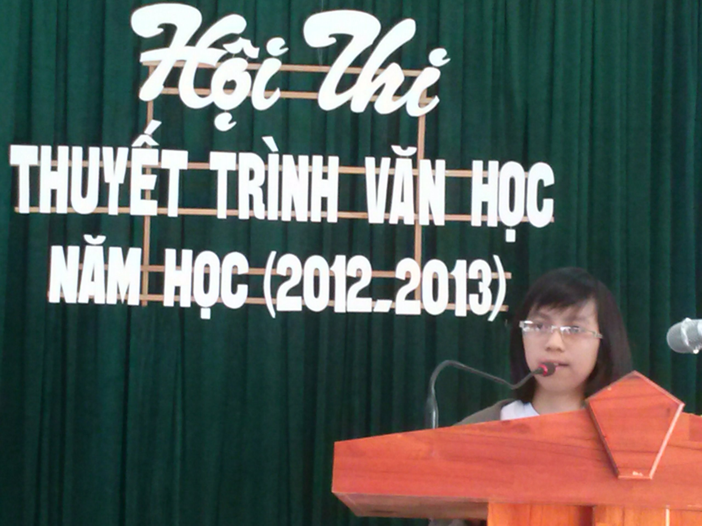
Bé hạt tiêu Ngọc Quỳnh - Lớp 11 chuyên Toán
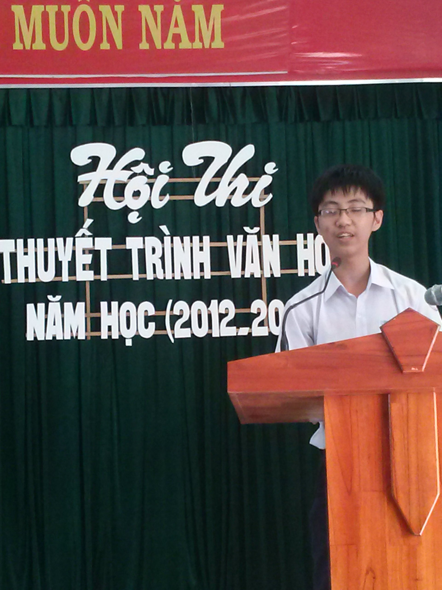
Thí sinh ấn tượng nhất hội thi Trần Huy Hoàng - Lớp 10 chuyên Toán
Tuy vẫn còn một số lớp chưa tích cực tham gia hội thi và một số bài thuyết trình chưa được thành công như mong muốn nhưng qua kết quả hội thi TTVH năm nay, có thể thấy nhiều học sinh có năng lực cảm thụ văn học tốt và rất hứng thú với sân chơi này. Đặc biệt, một số em đã thể hiện được khả năng trình bày – thuyết trình vấn đề của mình rất tốt. Từ ngôn ngữ, giọng điệu đến kĩ năng lập luận đều có tính thuyết phục cao đối với người nghe.
Hi vọng những hoạt động, những sân chơi bổ ích như thế này sẽ được duy trì để tạo thêm hứng thú trong học tập cho học sinh và giúp các em có điều kiện rèn luyện để hoàn thiện hơn các kĩ năng cơ bản cần có trong quá trình học tập ở trường phổ thông. Đó là các kĩ năng: Nghe – nói – đọc – viết và cao hơn là kĩ năng hùng biện giúp các em thành công trong cuộc sống.
Tin bài: Hồ Thị Thúy Hằng
Một số hình ảnh trong hội thi:
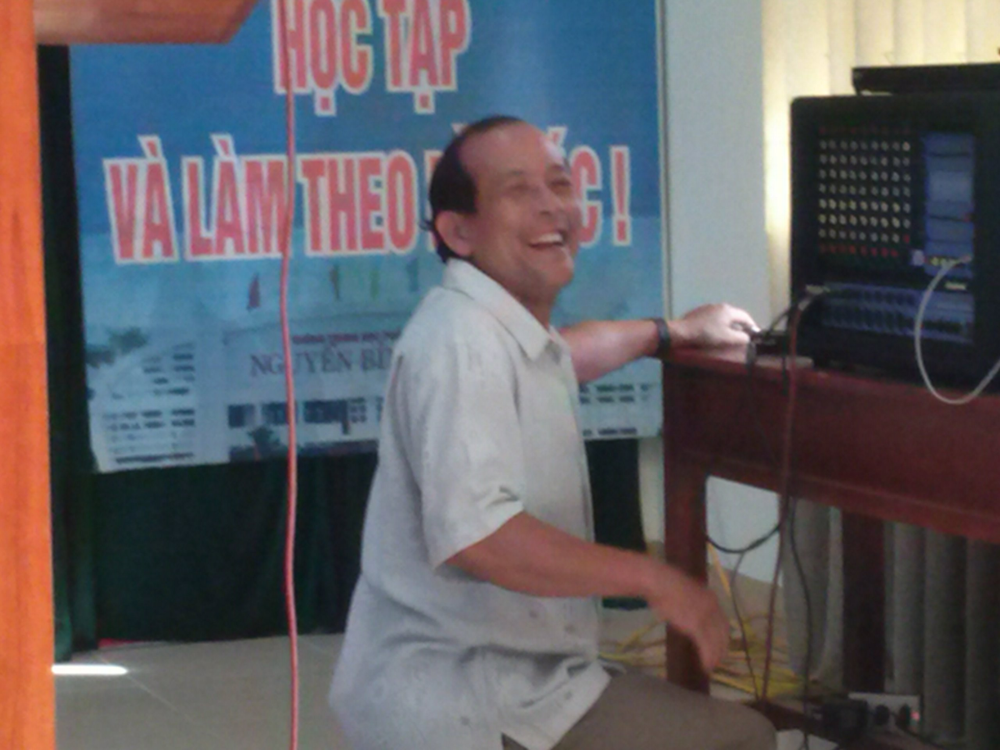
Chú Chương nhiệt tình phục vụ âm thanh, ánh sáng.
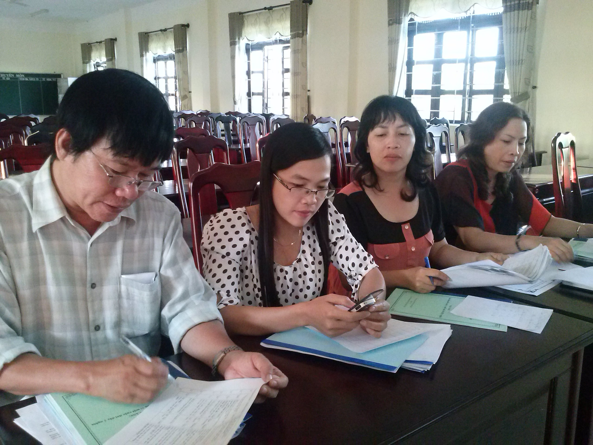
Bam giám khảo tổng kết điểm.
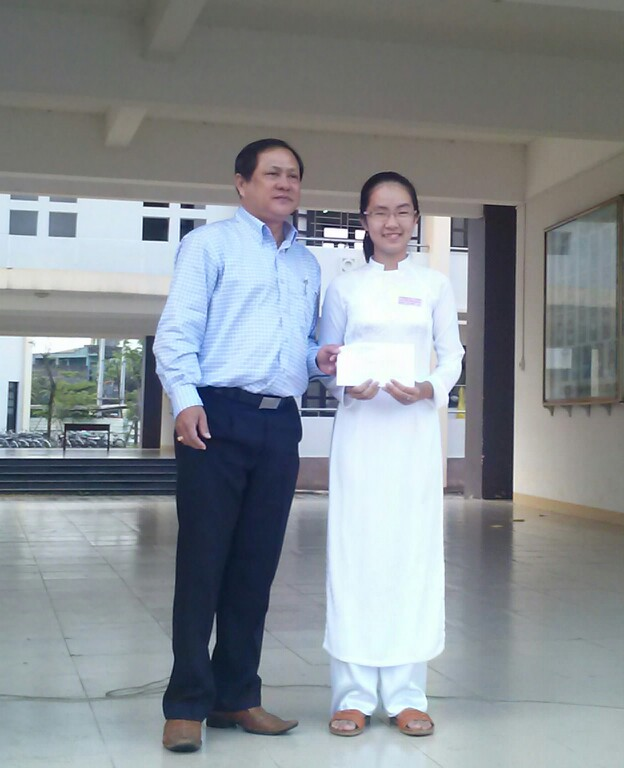
Thầy HT. Nguyễn Đình Tiến - Trao giải nhất cho HS. Phan Nguyễn Thu Sương
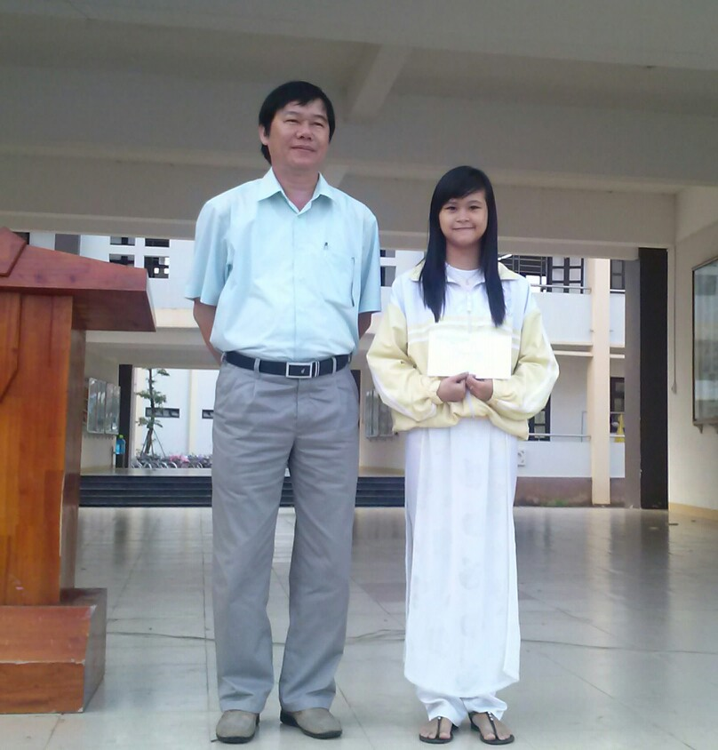
Thầy Trương Văn Quang - Trao giải Nhì cho HS. Nguyễn Như Thảo, Lớp 11 chuyên Văn.
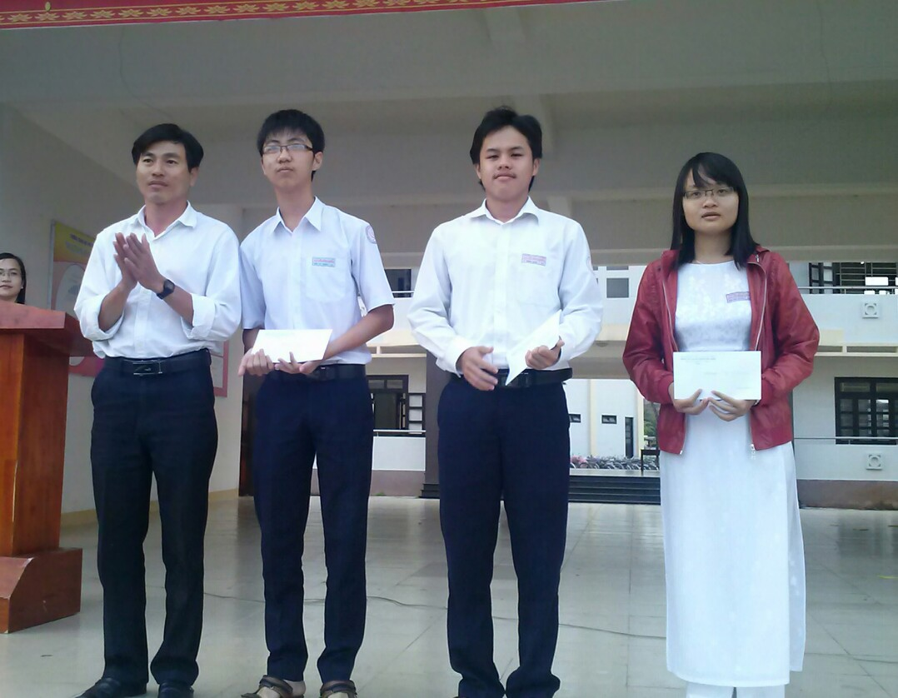
Thầy Châu Văn Thọ - Trao giải cho HS đạt giải Ba và Khuyến Khích
- 26/03/2013 09:05 - Tân Thạnh: Tổ chức giao hữu bóng đá
- 25/03/2013 10:36 - ĐOÀN TRƯỜNG THPT CHUYÊN NGUYỄN BỈNH KHIÊM TỔ CHỨC …
- 21/03/2013 08:06 - TRƯỜNG THPT CHUYÊN NGUYỄN BỈNH KHIÊM TỔ CHỨC HỘI T…
- 20/03/2013 08:34 - ĐOÀN TRƯỜNG THPT CHUYÊN NGUYỄN BỈNH KHIÊM – QUẢNG …
- 15/03/2013 10:02 - CÔNG ĐOÀN TỔ CHỨC CÁC HOẠT ĐỘNG KỈ NIỆM NGÀY QTPN …
- 21/02/2013 10:06 - TRƯỜNG THPT CHUYÊN NGUYỄN BỈNH KHIÊM TỔ CHỨC HỘI T…
- 29/01/2013 07:53 - Giấy mời Hội trại Mừng Đảng, Đón Xuân
- 12/12/2012 23:14 - TRƯỜNG THPT CHUYÊN NGUYỄN BỈNH KHIÊM TỔ CHỨC SINH …
- 07/12/2012 16:31 - HOẠT ĐỘNG CỦA CÂU LẠC BỘ TIẾNG ANH-
- 05/12/2012 21:59 - Giới thiệu Luật Công đoàn sửa đổi 2012